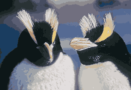
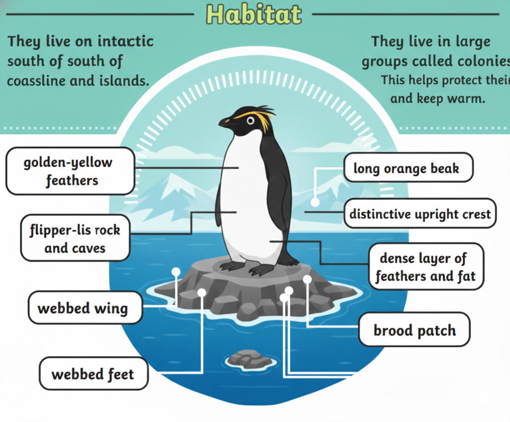
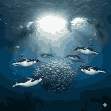

The Penguins with Upright Yellow Crests

Erect-crested penguins are a rare species known for their stiff, upright yellow crest feathers. They are among the least studied penguin species due to their remote habitat.

Erect-crested penguins live mainly on the Bounty and Antipodes Islands near New Zealand. They prefer rocky coastal cliffs and isolated island environments.

Erect-crested penguins mainly eat krill, fish, and squid. They are strong swimmers and spend much of their life searching for food in the ocean.